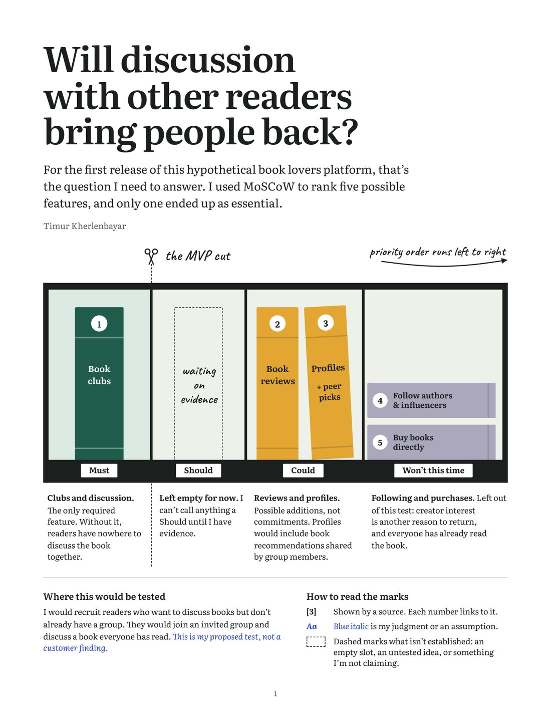
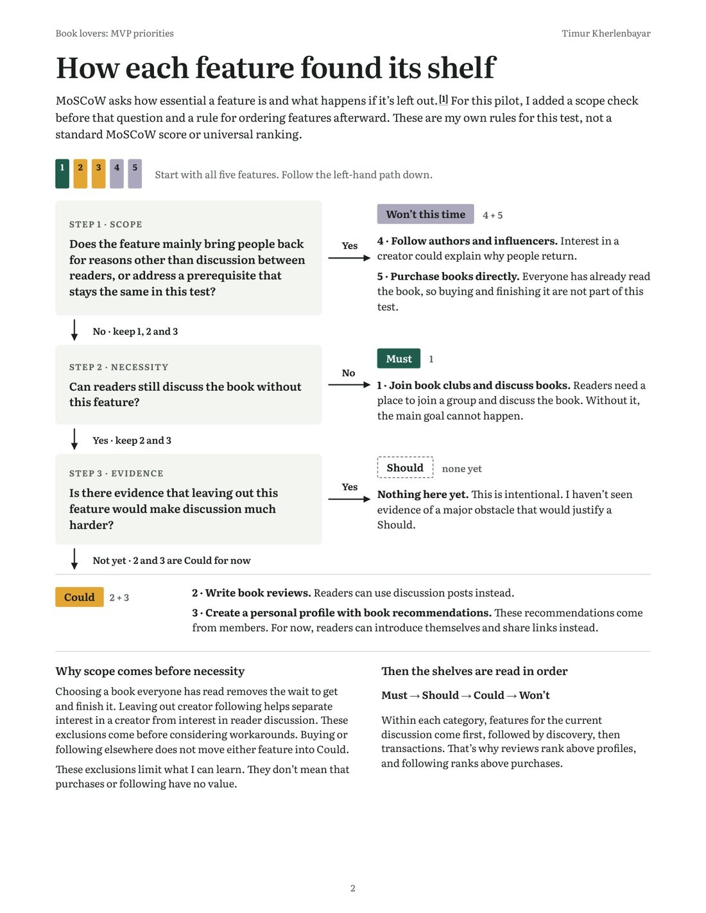
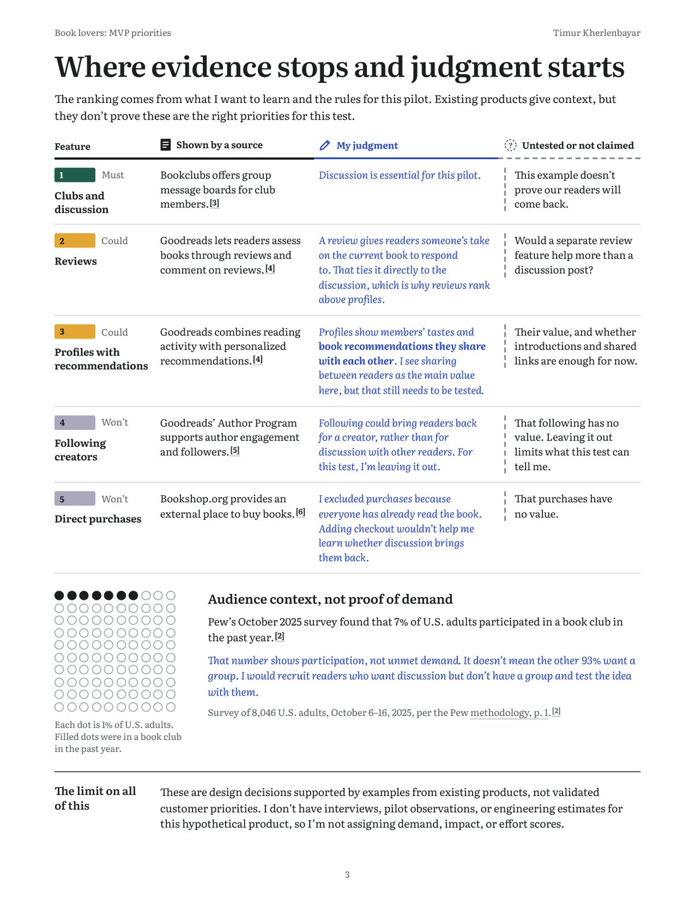
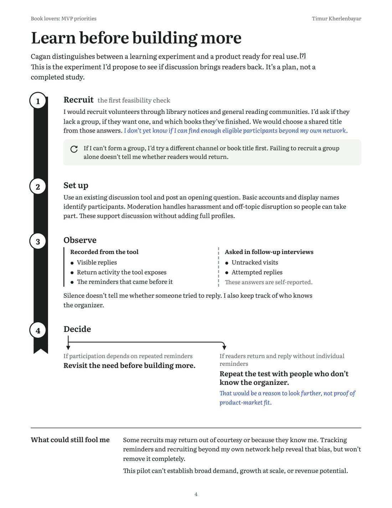
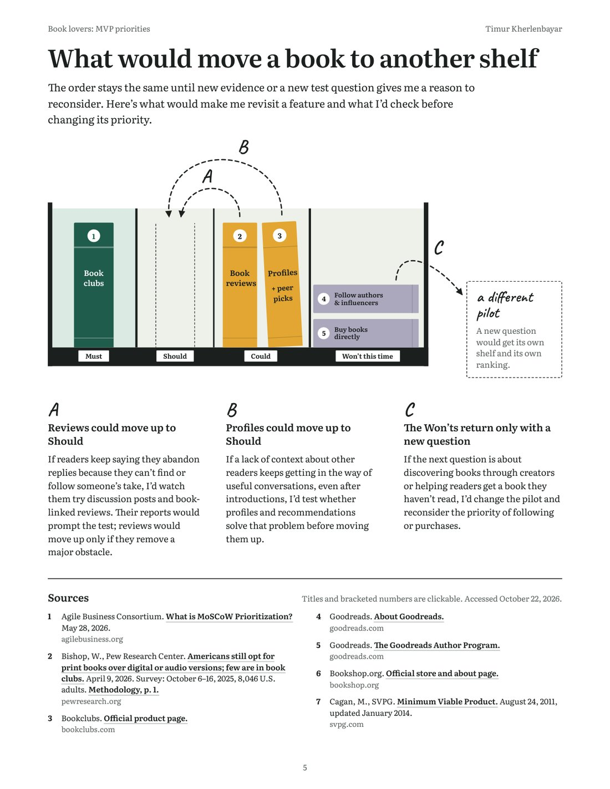

The short version
a two-minute read- The task
- Use a prioritization framework to rank five features of a hypothetical social platform for book lovers: profiles with recommendations, book clubs and discussion, buying books directly, writing reviews, and following authors and influencers.
- What I did
- Reframed the job as “what does the first release have to learn?”, added a scope check before MoSCoW and a tiebreak after it, refused to put numbers on things nobody had measured, and planned the test that would answer the question.
- What came out of it
- One Must (book clubs), an empty Should, two Coulds (reviews, then profiles) and two Won’t-this-times. The professor called the deliverable one of the best he had seen in the class.
- Why it matters
- The common way to lose points was a framework full of scores that nothing supports. This one marks its claims as sourced, as my judgment, or as untested.
- 1 of 5
- features made the cut as essential
- 0
- made-up demand, impact or effort scores
- 7%
- of U.S. adults were in a book club last year, read as context, not demand
01The question
Before ranking anything, decide what the first release has to prove
The assignment was graded half on what we ranked and half on how we showed it, and the professor warned that the most common way to lose points was a framework full of numbers that nothing supports. MoSCoW sorts features into Must, Should, Could and Won’t, which is simple, and that simplicity is exactly the risk: it is easy to dress an opinion up as a framework.
So before putting anything in a bucket I asked what the first version is even for. The platform is meant to be social, so my starting point was readers finding people to talk about books with. That was an assumption, not research, so I turned it into the question the first release would test.
Will discussion with other readers bring people back?
Every placement on the shelf follows from that question. A feature matters for this release only as far as it helps answer it.
02The rules
How each feature found its shelf
MoSCoW on its own asks how essential each feature is. I added a check before that and a tiebreak after it. These are my rules for this one pilot, not a standard scoring method, and the order comes out of them rather than the other way round.
Does the feature mainly bring people back for some reason other than discussion between readers, or address something this test holds fixed?
Won’t this time. Following creators is a different reason to return. Buying books doesn’t matter when everyone has already read the book.
no · keep 1, 2 and 3
Can readers still discuss the book without this feature?
Must. Without a club and a place to talk, the main goal can’t happen at all.
yes · keep 2 and 3
Is there evidence that leaving it out would make discussion much harder?
Should: none yet. I haven’t seen evidence of a major obstacle that would justify one.
not yet · 2 and 3 are Could for now
Within each shelf: what serves the current discussion first, then discovery, then transactions.
Could. Reviews above profiles, and following above purchases.
Leaving following and purchases out is about what this test can learn, not about their value. If creator interest brought people back, I couldn’t tell whether they came for the creator or for each other, so following has to wait for a test of its own.
03The empty shelf
I caught myself writing a rule to fit a feature, so I dropped the rule
My first version did have a Should. The rule was that a feature belongs there if the workaround makes it harder for readers to find shared tastes. When I tested that rule against the five features, it turned out to fit exactly one of them, profiles, which is a sign I had written it backwards: I had decided where profiles went and then built the rule around them.
So I took it out. For this pilot nothing is a Should until there is evidence of a painful workaround, and I don’t have any. An empty category looks odd on a slide, and that is the point: it shows where the evidence runs out.
An empty Should is more honest than a Should I can’t defend.
04Evidence and judgment
Every claim says what kind of claim it is
I had no interviews, pilot data or engineering estimates for a hypothetical product, so I didn’t give any feature a demand, impact or effort score. Instead, the deliverable marks three kinds of statement differently, so a reader can see at a glance which parts rest on a source and which rest on me.
Goodreads lets readers assess books through reviews and comment on them.[4]
A review gives readers someone’s take on the current book to respond to, which is why reviews rank above profiles.
Would a separate review feature help more than a discussion post?
Real numbers got the same care. Pew’s survey of 8,046 U.S. adults in October 2025 found that 7% had been in a book club in the past year. That number is easy to misuse.
of U.S. adults took part in a book club in the past year. It measures participation, not unmet demand: it doesn’t mean the other 93% want a group. So I narrowed the audience to readers who want discussion but don’t have a group, and kept even that as a hypothesis to test.
05The test
Learn before building more
A ranking is only a guess until something tests it, so the deliverable ends with the experiment I would run. It deliberately uses no custom software.
Recruit
Readers without a group, found through library notices and reading communities, who have all finished the same book.
Set up
An existing discussion tool, basic accounts and names, an opening question, and moderation. No full profiles.
Observe
Replies and returns the tool records, the reminders sent before them, and who already knows the organizer.
I also wrote down what could still fool me. Some people may return out of courtesy, or because they know me, which is why reminders and the organizer’s network are tracked. And a pilot like this can’t show broad demand, growth or revenue. Even a good result would be a reason to look further, not proof of product-market fit.
06Changing my mind
What would move a book to another shelf
The order holds until new evidence or a new question gives a reason to reconsider, and the deliverable says in advance what that evidence would look like.
Reviews could move up to Should
If readers keep abandoning replies because they can’t find or follow someone’s take, I’d watch them try discussion posts and book-linked reviews, and move reviews up only if they remove a major obstacle.
Profiles could move up to Should
If a lack of context about other readers keeps getting in the way of useful conversations, even after introductions, I’d test whether profiles solve that first.
The Won’ts return only with a new question
If the next question is about discovering books through creators, or helping readers get a book they haven’t read, that is a different pilot with its own shelf.
07How it went
The feedback, including the one call he’d argue with
Also, great template. My favorite section of yours was “What would move a book to another shelf”, and you employed the visuals really well. One of the best I’ve ever seen in this class.
He also pointed to the three-step path that shows the order coming out of the rules, and to leaving Should empty until there is evidence, which he said took discipline. The one thing he would debate is the closest call in the ranking: reviews above profiles. It rests on my judgment alone, and nothing shows that these readers would use a review more than a profile. If the pilot showed people mostly asking each other for recommendations, the order should flip.
I think that is fair. My reason for the order is that a review keeps someone’s opinion attached to the book, which gives the next reader something to answer, but it is a reason, not evidence. It is exactly the kind of call the pilot is there to settle.





Method notes
rules, sources and numbers
- Context
- Individual assignment in IS 562 Digital Product Management at BYU, October 2026. Graded 50% on what (does the order follow from the reasoning, is the reasoning supported) and 50% on how (clear writing, visuals that make the ranking obvious, purposeful white space). Laid out by me in Canva.
- Final order
- 1 Book clubs and discussion (Must). Should: none yet. 2 Reviews, 3 Profiles with recommendations (Could). 4 Follow authors and influencers, 5 Buy books directly (Won’t this time).
- Rules
- Scope first (does it bring people back for something other than reader discussion, or touch something the test holds fixed?), then necessity (can readers discuss without it?), then evidence (is there evidence that leaving it out makes discussion much harder?). Tiebreak within a shelf: current discussion, then discovery, then transactions.
- Key decision
- Dropped the Should rule once I saw it fit only profiles, meaning I had written it to fit a placement. Should stays empty until there is evidence of a painful workaround.
- Sources
- Agile Business Consortium on MoSCoW; Pew Research Center (April 2026 report on an October 6 to 16, 2025 survey of 8,046 U.S. adults: 7% in a book club in the past year); Bookclubs; Goodreads and its Author Program; Bookshop.org; Cagan on minimum viable products.
- The test
- Recruit readers without a group who finished the same book; run it in an existing discussion tool with moderation; record replies, returns and the reminders before them; follow up with interviews. Decision: reminders needed → revisit the need; unprompted returns → repeat with strangers.